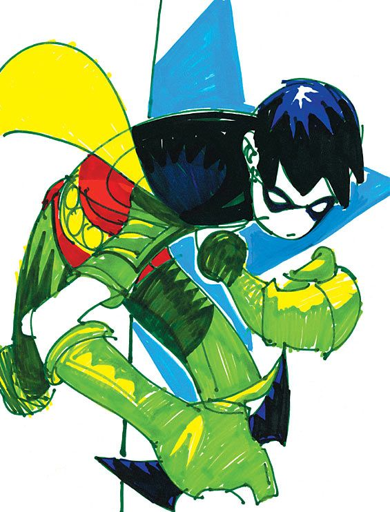

This is one of my all time favorite comic book covers, it depicts Tim Drake in his robin costume shortly befor he need to put the cape away due to family circumstances.
The artist is Damion scott, his website says:
Damion Scott or "MOSH"0110 (pseudonym) is a Jamaican/American comic book artist and writer.
Scott’s early career began with DC comics where he has worked on several titles, including Batman, Robin, Batgirl, Raven and HarleyQuinn. Scott has also worked on Spider-Man,Deadpool and Ghostrider for Marvel Comics.
A graduate of The Kubert School of Cartoon art, his drawing style is influenced by Hiphop culture. In 2006 Scott co-wrote and Illustrated “How To Draw Hip-Hop”, published by Watson-Guptill. He has collaborated with severals Hip Hop recording artist including Darryl Mc Daniels(RUN DMC), Mobb Deep, SlaughterHouse (Shady Records) and most recently a collaboration with the Black Eyed Peas and Marvel comics on the graphic novel “Masters of the Sun”. Currently Damion illustrates covers for Marvel and is penciller of the monthly series “Accell”for Lion Forge comics.